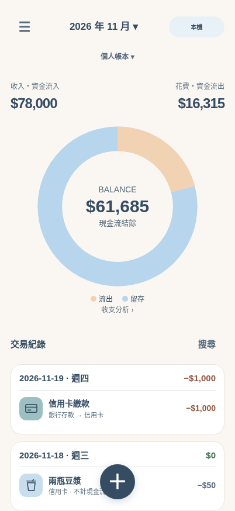

MYFINANCE. / V2.6簡明使用手冊
日常記帳、現金流與資產管理1. 更新與保護資料
先在設定匯出每本帳本的 JSON，存入私人 iCloud Drive。確認兩台手機沒有待同步交易。先用獨立網域的測試站和範例資料驗收，再上傳六個程式檔至原本 GitHub Pages。V2.5 的 Firebase Rules 不變；不需要重新建立帳本。
請勿刪除網站資料或原本 Web App 來強制更新。請保持網路、重新載入並關閉重開，確認設定頁顯示 v2.6。
2. 首頁
左上角開啟功能選單，點月份切換月份或全部時間，點帳本名稱直接切換私人／共同帳本。右上角放大鏡搜尋目前帳本全部歷史。下方加號新增交易，點歷史交易編輯，長按可複製。
月份 Balance = 期間流入 − 期間流出；全部時間 Balance = 目前現金類帳戶餘額（含起始餘額及調整）。投資轉入計入現金流出，不等於淨資產減少。

3. 搜尋
輸入項目、分類、帳戶、日期或金額；點篩選可設定交易類型、日期、金額區間、帳戶、分類及建立者。結果顯示筆數、流入、流出、淨額，可切換表格或匯出符合條件的 CSV。編輯後回到原結果。離線只能查已同步資料。
4. 收支分析
點首頁杏色圓環或支出金額進入支出分析；點收入進入收入分析；點藍色圓環或中央 Balance 進入 Balance。分析頁上方可切換三個報表和期間，左右箭頭切換上、下期間。
收入／支出可切換圓環和長條圖；點分類看交易，排序可選金額、分類或前期變化。支出可切換全部流出／實際消費；收入可切換全部流入／實際所得。未結束期間比較前期相同天數，前期紀錄不完整時請自行核對。
Balance 顯示每日或每月等期間收支，亦可切換累計結餘曲線。點資料點或日期看明細；全部時間可展開現金帳戶組成。

5. 記帳與帳戶
選分類、輸入金額、選帳戶、必要時填備註，再按 ✓。近期交易可帶入同分類資料；常用分類依頻率排序，並優先使用本人近期交易及預設付款帳戶。長按歷史交易可複製成新交易（請檢查日期及金額）。本機模式刪除後 10 秒可復原，雲端仍採刪除確認。
帳戶管理可新增、編輯、封存、恢復。投資估值直接輸入新餘額，先按加或減則以舊餘額計算。買股票使用轉帳到投資帳戶；信用卡消費使用信用卡帳戶，繳款使用銀行轉帳到信用卡。不要再記一筆同額支出。
6. 分類、帳本與隱私
左側分類管理可新增、編輯、隱藏或恢復分類，並搜尋圖示。分類隱藏不刪除歷史交易。帳本擁有者可以修改帳本名稱、授權或移除成員。成員各自登入 Google；不要共用密碼。設定可遮蔽主要金額，這不是安全鎖或資料加密。
7. 離線與同步
先連線開啟每個帳本並完成同步。離線記帳應先保存本機；回到網路並開啟 App 後同步。待同步或錯誤可從設定逐筆查看、重試及匯出。若發生版本衝突，可先匯出，再確認保留雲端版本；這會捨棄同筆未同步修改。切勿在不確定資料是否入帳時重複新增。
Firebase 是主要雲端資料庫，iCloud Drive 僅供手動備份。登出前處理全部待同步資料。iPhone 原生捷徑沿用既有設定，直接連線寫入需要網路。
8. 正式使用前
此為驗收版，真實 iPhone、離線冷啟動及 Firebase 多人同步尚未驗收。先用測試資料操作，再測兩台手機各自登入、切換帳本、飛航模式關閉重開、離線新增及恢復連線、權限與同步。完整測試限制見 TEST-REPORT.md。尚無直接覆寫雲端的還原或雲端刪除復原。